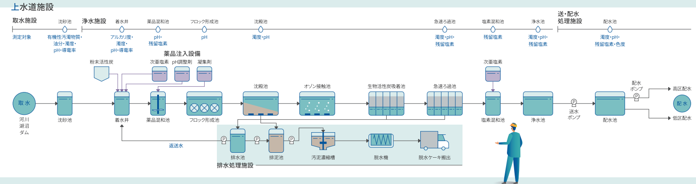
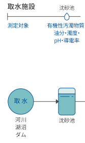
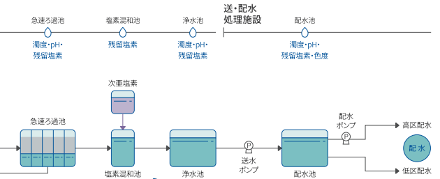
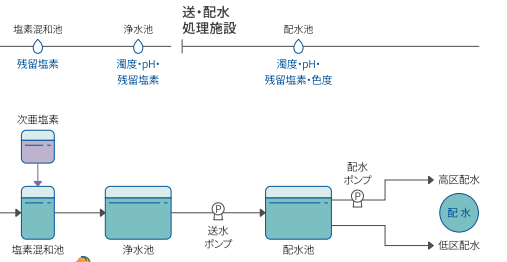

浄水場プロセスと薬品注入（水道法基準付き）
本資料では、浄水場における取水 → 着水井 → 沈殿 → ろ過 → 消毒 → 配水のプロセスについて、
社会人1年目向けにわかりやすく説明します。図や写真は、Bulletin 53W01A04-01（BU53W01A04-01.pdf）の
プロセス図および設備写真を使用する想定でレイアウトしています。
1. 浄水場 全体フローと上水道施設全体像

上水道施設全体像（BU53W01A04-01.pdf 3ページ掲載の図を想定）
上水道施設全体像の図では、取水施設・浄水場構内・配水池・配水管網が一枚で示されており、
各設備間の関係や水の流れを俯瞰できます。
取水（河川・ダム・湖沼）
→
沈砂池
→
着水井
→
薬品混和池
→
フロック形成池
→
沈殿池
→
急速ろ過池
→
塩素混和池（消毒）
→
浄水池・配水池
→
配水（各需要家へ）
 上水プロセスフローと水質計・薬品注入点の概要
（BU53W01A04-01.pdf に掲載のプロセス図を想定して貼付）
上水プロセスフローと水質計・薬品注入点の概要
（BU53W01A04-01.pdf に掲載のプロセス図を想定して貼付）
ポイント：原水から浄水への流れの中で、どの工程で何を取り除き、どの水質を測るかを意識します。
2. 取水・沈砂池・着水井
2-1 取水・沈砂池
河川・湖沼・ダムから原水を取り込み、沈砂池で砂や粗大な懸濁物を沈めます。

取水設備・沈砂池の写真（BU53W01A04-01.pdf 掲載の写真を想定）
| 主な目的 | 浄水場に原水を導き、大きなごみ・砂などを除去する。 |
|---|
| 代表的な計測 | 水位、流量、濁度、電気伝導率（導電率）、油分監視 など |
|---|
| 関連機器（BU53W01A04-01より） | 微量水中油分モニタ QS1000、pH計 PH8EFP、導電率計 SC210G など |
|---|
2-2 着水井
取水・沈砂池を通過した水は着水井に入り、水位を安定させて後段の薬品混和池・沈殿池へ送ります。
 着水井および周辺設備（BU53W01A04-01.pdf 掲載の写真を想定）
着水井および周辺設備（BU53W01A04-01.pdf 掲載の写真を想定）
| 主な目的 | 水位・流量を調整し、原水水質をオンラインで監視する。 |
|---|
| 代表的な計測 | 水位、流量、濁度、pH、導電率 など |
|---|
| 関連機器（BU53W01A04-01より） | 表面散乱形濁度計 TB830D、透過散乱形濁度計 TB810D、pH計 PH8EFP、導電率計 SC210G |
|---|
3. 薬品混和池・フロック形成池・沈殿池
3-1 薬品の種類
BU53W01A04-01 では、薬品注入設備として次の薬品が示されています。
| 薬品 | 主な目的 | 注入箇所の例 |
|---|
| 粉末活性炭 |
臭気・有機物の吸着除去（カビ臭、異臭味対策など） |
着水井、薬品混和池 など |
| 次亜塩素酸ナトリウム等（「次亜塩素」） |
前塩素処理（藻類・細菌抑制）、最終消毒 |
着水井、フロック形成池前、塩素混和池 など |
| pH調整剤（苛性ソーダ等） |
pHを最適範囲に調整（凝集効率向上、配管腐食抑制） |
薬品混和池 など |
| 凝集剤（ポリ塩化アルミニウム等） |
汚れをフロック化して沈殿・ろ過しやすくする |
薬品混和池、フロック形成池 |
3-2 薬品注入と測定すべきプロセス値
| 薬品 |
主な制御・監視指標
(プロセス値) |
代表的な水道法基準・目標値 |
| 粉末活性炭 |
・臭気（官能検査）
・有機物（TOC 等）
・濁度、色度
|
・臭気：異常でないこと
・味：異常でないこと
・色度：5度以下（水道法水質基準）
・濁度：2度以下（水道法水質基準）
|
| 次亜塩素酸ナトリウム等（次亜塩素） |
・残留塩素（遊離/結合）
・アンモニア性窒素
・有機物（消毒副生成物対策）
|
・残留塩素（基準）：1mg/L以下（水道法水質基準）
・残留塩素（蛇口での下限）：0.1mg/L以上
※水道法施行規則等により、給水栓で0.1mg/L以上保持することが求められる。
|
| pH調整剤 |
・pH値
・アルカリ度
・電気伝導率
|
・pH値：5.8以上 8.6以下（水道法水質基準）
・アルカリ度：配水管腐食防止等の観点で目標設定（例：20～100 mg/Lとして管理）
|
| 凝集剤 |
・濁度（薬注前後、沈殿池出口）
・pH値（凝集の最適pH）
・フロック状態（目視）
|
・濁度：2度以下（水道法水質基準）
・pH値：5.8以上 8.6以下（水道法水質基準）
|
BU53W01A04-01 との対応：図中の「薬品注入設備（粉末活性炭・次亜塩素・pH調整剤・凝集剤）」と、
「濁度・pH・導電率・残留塩素」などの測定点を対応づけて理解すると、配線図・I/O設計のイメージがつかみやすくなります。
4. ろ過・塩素混和池・浄水池〜配水
4-1 急速ろ過池
沈殿池を出た水は、急速ろ過池で砂や活性炭層を通過し、細かな濁りを除去します。

急速ろ過池（BU53W01A04-01.pdf 掲載の写真・図を想定）
| 主な目的 | 沈殿で取り切れない微細な懸濁物を除去し、水を透明にする。 |
|---|
| 代表的な計測 | ろ過池流入・流出の濁度、差圧、流量 など |
|---|
| 関連機器（BU53W01A04-01より） | 高感度透過散乱形濁度計 TB800D（ろ過池用） |
|---|
| 水道法との関係 | 浄水の濁度が2度以下となるよう、ろ過性能を確保する。 |
|---|
4-2 塩素混和池・浄水池
ろ過した水に最終的な塩素消毒を行い、浄水池・配水池に貯めてから配水します。

塩素混和池・浄水池（BU53W01A04-01.pdf 掲載の写真・図を想定）
| 主な目的 | 病原性微生物を不活化し、配水末端まで残留塩素を保持する。 |
|---|
| 代表的な計測 | 残留塩素、濁度、pH、色度 など |
|---|
| 関連機器（BU53W01A04-01より） | 自動水質監視装置 WM400（配水池）、残留塩素計 など |
|---|
| 水道法との関係 |
・残留塩素：1mg/L以下（水道法水質基準）
・残留塩素（蛇口）：0.1mg/L以上保持（水道法施行規則等）
・pH値：5.8以上 8.6以下
・濁度：2度以下
|
5. 工程別の薬品・計測値・水道法基準の整理
| 工程 |
主な薬品 |
主な計測値 |
関連する水道法基準 |
| 取水〜沈砂池〜着水井 |
（必要に応じて）粉末活性炭、前塩素 |
濁度、pH、導電率、油分、臭気 など |
・濁度：2度以下
・色度：5度以下
・pH：5.8〜8.6
|
| 薬品混和池〜フロック形成池〜沈殿池 |
凝集剤、pH調整剤、粉末活性炭、前塩素 |
濁度（薬注前後）、pH、アルカリ度、温度 |
・最終的に濁度2度以下、pH5.8〜8.6を満たすように設計・運転
|
| 急速ろ過池 |
（必要に応じて）中間塩素、粉末活性炭 |
ろ過出口濁度、差圧、流量 |
・浄水濁度：2度以下（多くの事業体で1度以下を目標）
|
| 塩素混和池〜浄水池〜配水池 |
次亜塩素酸ナトリウム等 |
残留塩素、濁度、pH、色度 |
・残留塩素：1mg/L以下（基準）、0.1mg/L以上（蛇口）
・pH：5.8〜8.6
・濁度：2度以下
|
新人向けの着眼点：
- pdf3枚目の上水道施設全体像と、本資料の工程別説明を見比べて、設備間のつながりをイメージしてください。
- プロセス図（BU53W01A04-01）の中で、各池の薬品注入点とpH・濁度・導電率・残留塩素計の設置点をトレースすると、I/Oリストとの対応が見えてきます。